GE Exclusive Use Only
Direction 5440000, Rev# 5
Signa HDxt Service Methods
Module Version 3.0, Version Date 11/5/09
GE Exclusive Use Only |
| NOTE: | The web screens and detailed information is provided in the order that it appears on the Navigation menu on the left side of the screen. |
This web page shows the basic layout of the Magmon3 web interface. The left column is a navigation menu where you can select one of the available web pages. Selecting one of the items in the navigation menu changes the page shown in the main section. Upon login, the main section will display the Version Info screen.
Illustration 1: Basic Web Page Layout (Proprietary Mode)
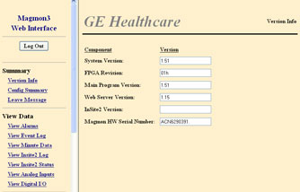
Version Info is the first page displayed after login. It identifies the version numbers installed on the Magmon3 unit:
System Version: Software version currently loaded on the unit
Hardware Version: Version of microcontroller
Main Program Version: Magmon3 software version
Web Server Version: Web server software version
InSite2 Version: Back Office Interface software version
Magmon HW Serial Number: Serial number of the Magmon3 unit
The Magmon Configuration Summary page (Illustration 2) displays the current configuration of the Magmon3. Items on this page are read-only, and values cannot be changed.
Illustration 2: Config Summary Example Screen
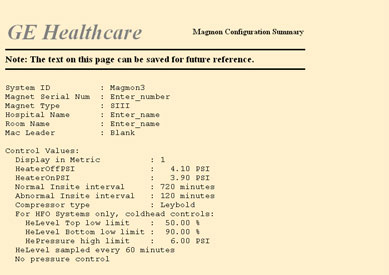
The Leave Message page (Illustration 3) allows the Field Engineer to enter a message up to 200 characters in length and submit it into the event log.
Illustration 3: Leave Message Example Screen
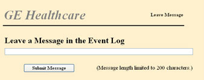
The View Alarms page (Illustration 4) displays the alarm or fault conditions currently present on the Magmon3. If faults are present, the list will display them in order of importance with the most serious faults at the top of the list.
Illustration 4: View Alarms Example Screen
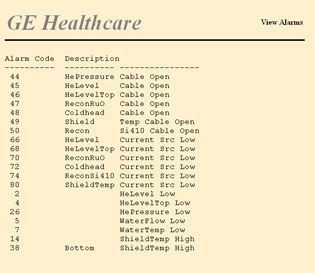
The Magmon3 maintains a log of events that have occurred on the monitor. The contents of the event log can be viewed on this page. The View Event Log page allows you to select what type of events should be displayed and how many days of events should appear.
Illustration 5: View Event Log Screen
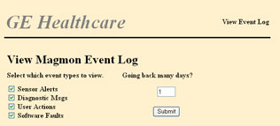
By default, all events for the last day appear. Modify the selection by clearing boxes for the items you do not want to view and/or changing the number of days to display. Click [Submit] to display the selected events in one long list (see Illustration 6).
Illustration 6: Magmon Event Log Screen 2
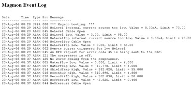
The Magmon3 reads each of the sensors once per minute and saves this data internally. The Magmon3 will store up to one month of minute data. From the View Minute Data page, select the range of data to be displayed.
Illustration 7: Minute Data Screen
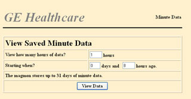
The Magmon3 only shows this data as text, and there is no graphing function. However, the data is displayed in a format that makes it easy to cut and paste data into a spreadsheet for graphing. If the chart contains fault codes in the last four columns (as in Illustration 8), the Magmon3 displays an Error Codes help page in the Navigation menu defining the meaning of the codes.
Illustration 8: Minute Data Example

The View InSite2 Log page shows activity related to the Magmon3 connecting to the back office and uploading data. Data in this log is lost when the Magmon3 is turned off (see Illustration 9).
Illustration 9: View InSite2 Log Example
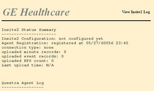
The View Analog Inputs page displays the current values seen by the Magmon3's analog inputs. The page automatically updates several times a minute to keep the readings current. This page is a diagnostic aid to confirm that the sensors are properly connected and configured (see Illustration 10).
Illustration 10: View Analog Inputs Example Screen
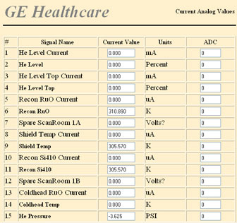
The View Digital I/O page displays the current values seen by the Magmon3's digital inputs and outputs. The page automatically updates several times a minute to keep the readings current. This page is a diagnostic aid to confirm that the I/O lines are properly connected and configured. In the Current Value column, 0 means Off or False; 1 means On or True.
Illustration 11: Current Digital Values Screen
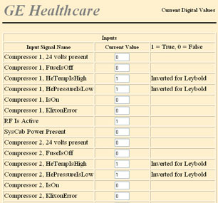
The Coldhead Utility is useful during a coldhead replacement. The display updates every 10 seconds.
Illustration 12: Coldhead Utility
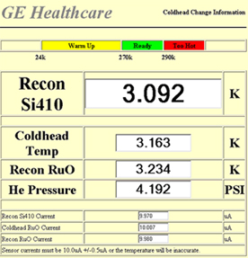
| NOTE: | For HFO & 7T systems, click the Dual Coldhead link at the top of the page to enter data for the 2nd coldhead and compressor. |
The Preventative Maintenance Data page allows you to enter data on the coldhead, compressor, and adsorber. This data is sent to InSite so PM can be scheduled.
Illustration 13: Preventative Maintenance Data
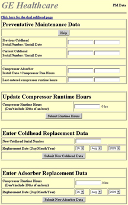